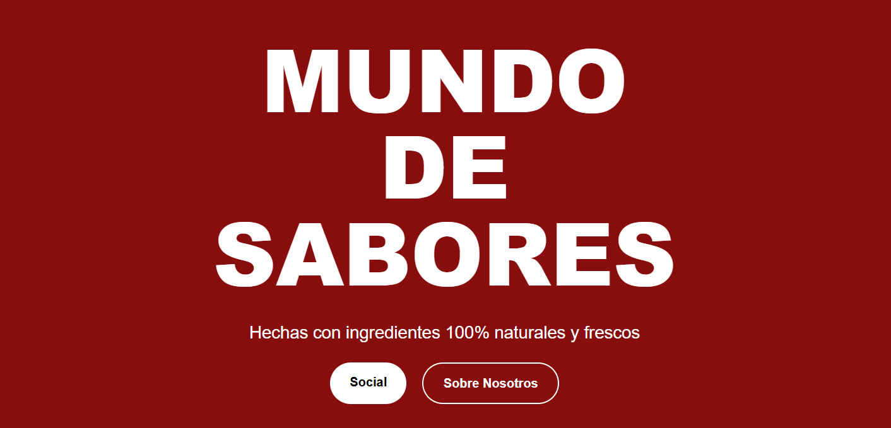
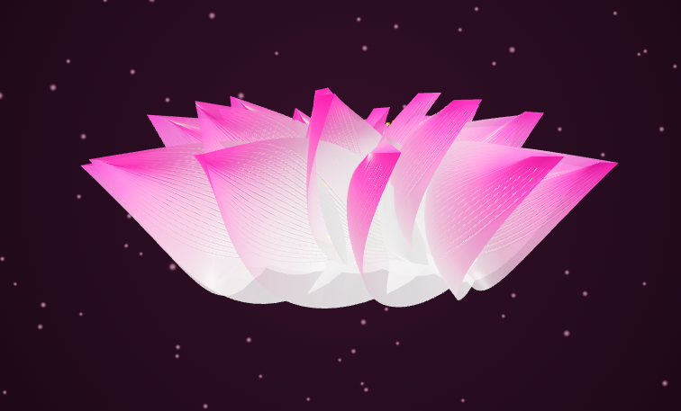
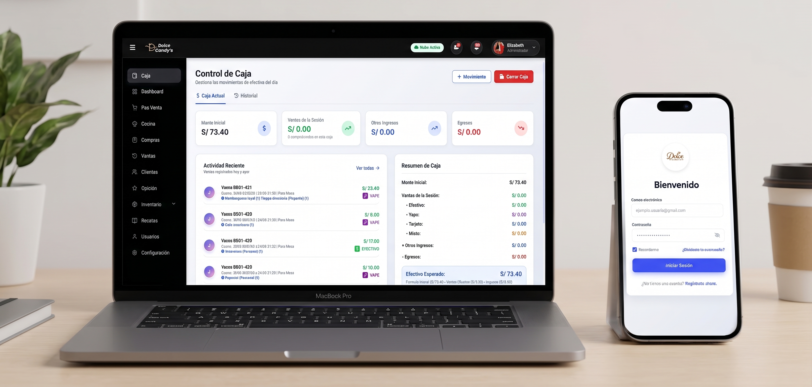
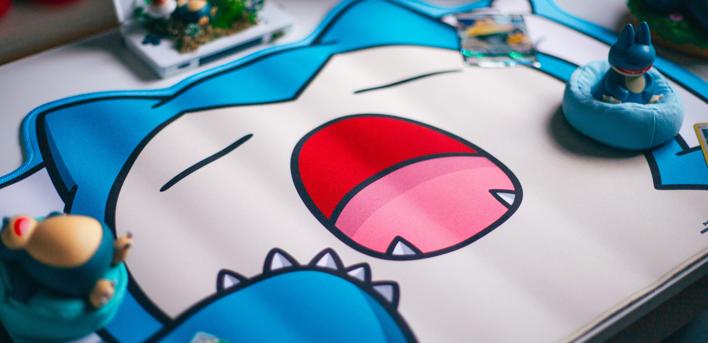
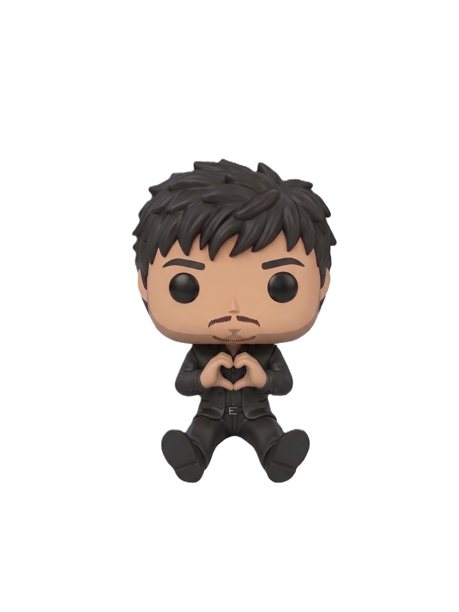

Explorando nuevos límites en la web: interfaces fluidas, diseño de sistemas en #Figma y desarrollo interactivo con #JavaScript y ¡Construyamos algo extraordinario juntos! 🚀✨
Donde el diseño,
se une a la funcionalidad.
WILL SALINAS — DESARROLLADOR DE SOFTWARE & UI DESIGNER
Diseño y desarrollo experiencias digitales que combinan tecnología, diseño y funcionalidad. Creo interfaces modernas, aplicaciones web y experimentos interactivos pensados para resolver problemas reales de una forma simple y atractiva.
Me interesa convertir ideas complejas en productos digitales claros, intuitivos y agradables de usar. Desde la arquitectura de una aplicación hasta el último detalle de su interfaz, disfruto construir cada parte del proceso.
He trabajado en proyectos de desarrollo de software, frontend y diseño de interfaces, explorando nuevas formas de crear experiencias web modernas y eficientes de forma independiente.
Explora mis proyectos, conoce un poco más sobre mí o simplemente hablemos de una idea.
Proyectos Destacados
SELECCIÓN DE TRABAJOS Y EXPERIMENTOS INTERACTIVOS

Pagina web Ai-Ta Pizza
Sitio web para una pizzería, realizado con HTML5, CSS3 y JavaScript, con un diseño único y moderno.

Flor de loto 3D
Este proyecto es una experiencia visual interactiva en la que controlas una flor de loto en 3D usando gestos de manos.

POS Dolce
Este proyecto es un sistema de punto de venta (POS) diseñado para gestionar transacciones comerciales de manera eficiente.

Procedural Lo-Fi Soundscapes
Generador procedimental de atmósferas musicales y sintetizador de acordes Lo-Fi en tiempo real sin requerir archivos de audio pesados.
Cyber Glass UI Design Kit
Sistema de diseño en Figma con componentes atómicos, tokens de color neón, tipografías y prototipos interactivos de alta fidelidad.
3D Holographic Perspective Engine
Motor de perspectiva y profundidad 3D interactivo que calcula dinámicamente la posición del cursor para generar reflejos holográficos.
Herramientas & Tecnologías
ARSENAL TÉCNICO Y STACK PRINCIPAL
Figma
JavaScript
HTML5
Node.js
Docker
Git
Experiencia & Habilidades
TRAYECTORIA PROFESIONAL & HITOS DE APRENDIZAJE
2024 — PRESENTE
Desarrollador Frontend & UI Designer
Proyectos Independientes & FreelanceDiseño e implementación de sistemas de diseño escalables en Figma, maquetación de interfaces web interactivas de alto rendimiento con JavaScript moderno, CSS3 avanzado y animaciones micro-interactivas.
Figma
JavaScript ES6+
UI / UX
HTML5 & CSS3
2023 — 2024
Desarrollo Web & APIs Backend
Formación & Aplicaciones PrácticasConstrucción de servicios backend y APIs RESTful con Node.js y Express, manejo de base de datos relacionales y no relacionales, e integración de contenedores Docker para entornos de desarrollo.
Node.js
Express
Docker
Git / GitHub
2022 — 2023
Fundamentos de Programación & Creatividad Digital
Inicios en Desarrollo de SoftwareAlgoritmos, estructuras de datos, lógica de programación y primeros pasos en diseño visual de interfaces web adaptables para diferentes dispositivos.
Lógica de Programación
Diseño Web Responsivo
Clean Code

>
CREATIVE MODE
_
¡Si puedes imaginarlo, puedes crearlo!